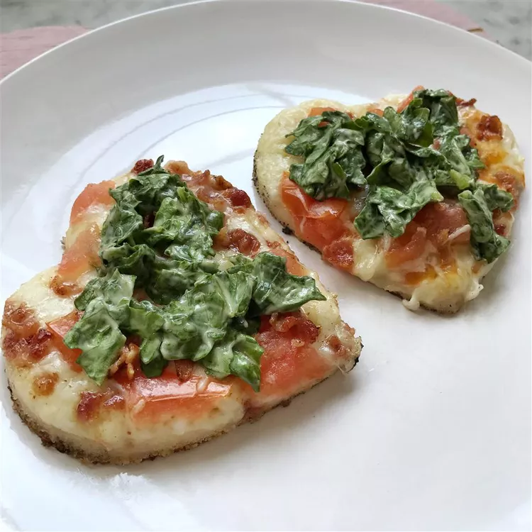

BLT Pizza

Description
A recipe for BLT Pizza
Original recipe here by AMYAME on allrecipes.com
Ingredients
- Bacon
- Pizza crust dough
- Olive oil
- Mozzarella cheese
- Tomatos
- Iceberg lettuce
- Mayonnaise
- Salt and pepper
Steps
- Preheat the oven to 375 degrees F (190 degrees C), or according to package directions for pizza dough.
- Place bacon in a heavy skillet over medium-high heat; fry until browned, but not crisp. Drain on paper towels.
- Stretch pizza dough out over a pizza stone, pan, or cookie sheet. Brush dough with olive oil. Spread mozzarella cheese over crust and arrange tomatoes on top. Chop bacon and sprinkle evenly over pizza.
- Bake pizza for 10 to 15 minutes in the preheated oven, until crust is golden and cheese is melted in the center. Meanwhile, toss shredded lettuce with mayonnaise; season lightly with salt and pepper. Top finished pizza with dressed lettuce and serve immediately.